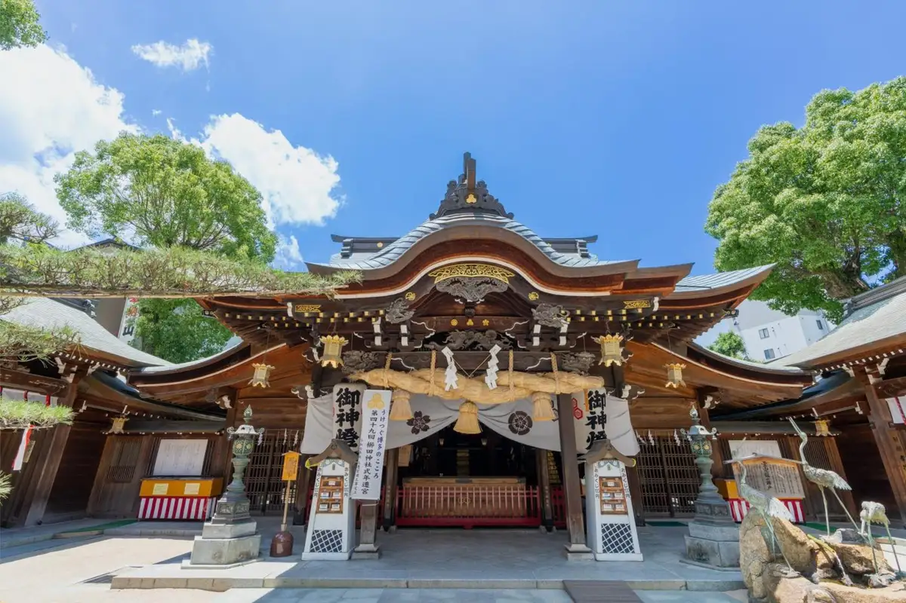
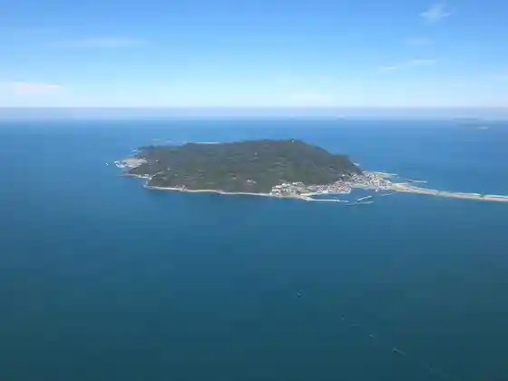
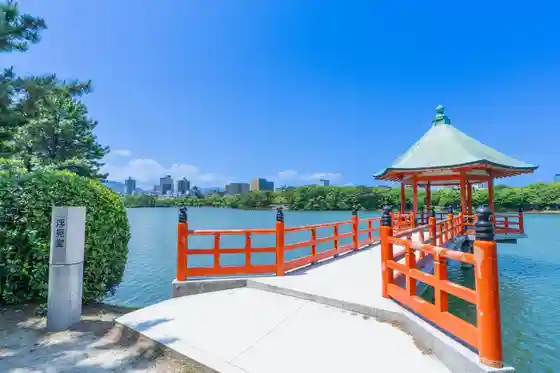
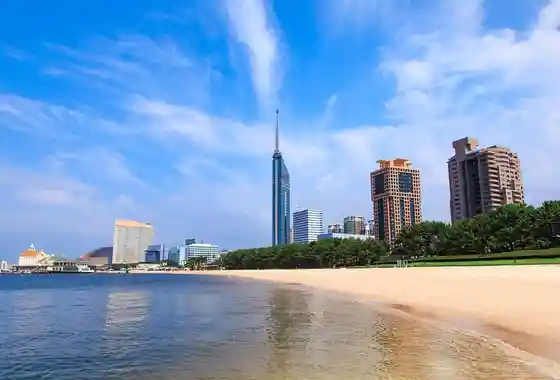

Fukuoka
Fukuoka · Fukuoka
Fukuoka
Highlighted on the Fukuoka map.

Sights
Kushita Shrine
Ohori Park Nippon Garden Yo Kai SEKAI
Shiga Shima

Ohori Park

Shiisaido Momochi Seaside Park

Fukuya Aji no Mentaiko Kojo Hakuhaku
Marinwarudo Umi no Chudo
Fukuoka Tawa
Tenjin
no Ko no Shima Ai Land Park
Nokono Shima
BOSS E·ZO FUKUOKA
Higashi Cho Tera
Fukuoka Opuntoppubasu
Fukuoka Castle Ruins
Nishi Park
Hamachi Shuzo (Suginoya)
Oyafuko Tori
Nakasu Hakata Fune
Hakozaki Miya
Beisaidopureisu Hakata
Nishishin Eria
Saiba Shrine Nakatsukasa Magotaro Inari Shrine
Umi no Chudo Seaside Park
Horakumanju
Fukuoka Do Botanical Garden
Fukuoka Umi Zuri Park
Fukuoka Kokusai Center
Kin'in Park
Shiga Umi Shrine
JR Hakata Shitei (Tsubame no Mori Hiroba)
Chikuzen Kuniichi Yuki Miya Sumiyoshi Shrine
Ganso Motoyu
Nakasu
Tojin Town Eria
Hakata Haneya So Honke
Fukuoka Art Museum
Sanriokyarakutazu Doriimingu Park
Osakana Tengoku
Yagihashi Rengo City Ba Kyodokumiai
Keigo Park
Daimyo Eria
Konpeito Okoku Fukuoka Museum
Mizuho PayPay Domu Fukuoka
Kyu Fukuoka Ken Public Hall Kihin Kan
ONE FUKUOKA BLDG. (Wambiru)
Marinmesse Fukuoka
Kyuka Village Shiga Shima
Kyanarushitei Hakata
Ohori Park Nippon Garden Chu SORA
Raku Mizu Sono
Shiga Shima Shiomi Lookout
Shiisaido Momochi Chiku
Maizuru Park
Genko Shiryo Kan
(Hakata Town Ie) Furusato Kan
Aburayama Katae Lookout
Fukuoka Anpanman Kodomo Museum in Moru
Odo Park
Gofuku Town Eria
Nama no Matsubara
Ramen Kassoro
Keigo Shrine
Fukuoka Omocha Art Museum
Tohei O Park (Hakata Forest)
Gandamu Park Fukuoka
Torigai Hachiman Shrine
Tomo Izumi Tei Park
Ramensutajiamu
Fukuoka Ei Tosen Shiga Shima Ryokyaku Machiai Tokoro
Yakuruto Hassho no Chi Kinenhi
INN THE PARK Fukuoka (Kyutai Tento)
Higashi Park
Marizon
Fukuhaku Deai Hashi
Kashii Miya
SAWARAPIA Fukuoka Prefectural Momochi Bunka Center
JR Hakata Shitei (Amyu Plaza)
Shoyo Supa Resort Main Shop
Meigetsu Do
Akasaka Eria
Umi no Chudo
(Hakata Ichiban Taiko) no Warabi Mochi
Hakata Yufuin Takeo Onsen Manyo Baths
Sho Ro Shima
Hanahata Engei Park
(Kabu) Sanpuru RiKi
Kizzania Fukuoka
Tenjin Nishi Tori
Ohorikoen Nippon Garden
CARGO PASS - Kagopasu
Yatai
Fukuoka Science Museum
Gan no Su Sakyu (Nata Sakyu Nata Danso)
ABURAYAMA FUKUOKA (Aburayama Fukuoka)
Toka Ebisu Shrine
Shiga Shima Beach
Fukuoka Hanshu Kuroda Ie Hakasho
Fukuoka Museum
Tenjin Chikagai
Hakata Sennen Mon
MARK IS Fukuoka Momochi
Tenjin Chuo Park
Asobitaiken ! Mirukiiuei
Hakata Kenjo Honpo Bangiya
TM Fuzu Kani Oroshi Chokubai Mise
Ishi Village Man Jo Do
Genkai Shima
Hakata Onsen
Nakasu Zenzai
Akurosu Yama
Snow Peak YAKEI SUITE ABURAYAMA FUKUOKA
Karo no Uron
Sofuku Tera
Nogawa Nai Gorge
Nichiren Seijin Dozo
Nagahama Sengyo Market
Nokono Shima Kyanpu Village Beach
Hakata Minato (Chuo Fu Atama Hakata Fu Atama)
Izumotaisha Fukuoka Bun'in
Ohara Beach
Sazae San Shopping Street Tori
Umi no Chudo Sanshainpuru
Hakata Dentokogei Kan
Mitsui Shoppingu Park Rarapoto Fukuoka
Hase Dam
Koro Yakatato
Koun Shrine
Akurosu Fukuoka Takumi Gyararii
Hakata Eria
Washio Atago Shrine
Kokorozashi Shiki Shrine
Mino Shima Shopping Street
lyf Tenjin Fukuoka (Raifu Tenjin Fukuoka)
Fukuoka Budokan
Autumn Leaves Hachiman Shrine
Aburayama
Hakozaki Miya Shin'en Hana Garden
Magaribuchi Dam
Kachiuma Beach
Joten Tera
Iimori Shrine
Fukuoka Ritsu Hakata City Tami Puru
Shiga Umi Shrine Okitsu Miya
INN THE PARK Fukuoka (Babekyu Ba)
Motsu Nabe
VS PARK WITH G Rarapoto Fukuoka Mise
Kyushudaigaku Sogokenkyu Museum
Shofuku Tera
Shiga Shima Bijita Center
Fukuoka Tami Bosai Center
Fukuoka Prefectural Library
Akushion Fukuoka
Yoshizuka City Ba Ritoruajiamagatto
Hakata Forest Yudokoro Gatsu Baths
Fukuoka Aka Renga Bunka Kan (Kyujitsu Honsho Inochi Kyushu Branch)
Hiruton Fukuoka Shiihoku
Chiimuraboforesuto Fukuoka – SBI Shoken
Ohorikoen Nogakudo
Ryugu Tera
Ishigura Shuzo
Kawabata Zenzai Plaza
Yokozuna Hono Dohyoiri
Furo Mizu
Fukuoka Kokusaikaigijo
Fukuoka Ken Gokoku Shrine
Fukuoka Ritsu Sawara City Tami Puru
Besuto Denki Sutajiamu
Shiomi Park
Hakata Udon
Ohori Terasu Yame Cha to Nihonteien to
THE RAIL KITCHEN CHIKUGO (Za Rerukitchin Chikugo)
Kanenokuma Iseki
Puru Okoku in ABURAYAMA FUKUOKA
Chi Gyochu O Park
Guringurin
Itatsuki Iseki Yayoi no Mura
Kyushu Yusen
Ajisai En
Fukuoka Ritsu Minami City Tami Puru
Hirao Sanso
Chidori Manju So Honpo (Chidori Ya Main Shop)
Burubotorukohii Fukuoka Tenjin Kafe
Fukuoka Ajia Art Museum
Aji no Mentaiko Fukuya Nakasu Main Shop
Fukuoka Shiro Koro Kan Annai Tokoro (San no Maru Sukuea)
Karatomari VILLAGE
Hakata Ribarein
Nogata Iseki
Shuki Rei Taisai
Kameyama Joko Dozo
Kano Gaku Haikingukosu
THE LUIGANS Spa & Resort (Za Ruiganzu. Supa & Resort)
Shikashimasaikuru
Hakata Shokko Gei Kan
Mari no Ashitei Fukuoka
Tennen Onsen Tenjin Yu no Hana
Nagatoshi In
Karatomari Ebisu Kaki
Imazu Sports Park
Nishi Tozaki Shiisaidokantorii Club
Papiobiirumu
Fukuoka Yokamonhiroba (Fukuoka Ken Bussan Kanko Tenjishitsu)
Sanui Orimono Hakataeki Maingu Mise
Nami Ha Baths
Chokoretoshoppu
Fukuoka Maizo Bunkazai Center
Imajuku Ningyo
Karashi Mentaiko
KITTE Hakata
Hiyo Ko Honpo Yoshino Do
Moko Tsuka
Yoshimoto Fukuoka Daiwashoken /CONNECT Gekijo
Airefu Horu
Morimoto Nobutai
Mei Shima Benzaiten
Hakata Hariko
Mei Shima Castle Ruins
Mei Shima Shrine
Papiyon 24 Gasuhoru
Fukuoka Shiro Mukashi Tambo Kan
Daimaru Fukuoka Tenjin Mise
Akurosu Fukuoka
Kizzania Fukuoka Natsuyasumi Gurupu Wari Kyanpen !
Yoneichi Maru no Kuyo to
Fukuoka Prefectural Sogo Puru
DOCORE Fukuoka Shoko Kai Shoppu
Kotoku Tera
Fukuoka Sogo Library
Hakata Za
Shiga Shima Doggu Main Shop
Imajuku Kofun Gun (Otsuka Burial Mound, Maru Waizan Burial Mound, Yama no Hana 1 Go Fun, Meshi Shi Ni Tsuka Burial Mound, Kabuto Tsuka Burial Mound, Suki Saki Burial Mound, Jaku Hachiman Shrine Burial Mound)
Seigan Tera
Sen Me Tera
Fukuoka Chuo Library
Surf Side Cafe
Chikuzen Hakata Zendo Tera (Fukuoka)
Yame Honpo
Kantorii Farm Kiichigo Sha
cafe&bar saino
Fukuoka Tami Hall
HAKATA JAPAN
Yoshitake Takagi Iseki
Hozuki Natsu Festival
Fukuoka Sawara Library
Nishi Aburayama Park
Ni Tsuru Do
Sensai Na Utsukushisa De Shiawase Wo Musubu Hakata Mizuhiki
Shunki Ujiko Taisai Shinko Shiki
Unagi no Nedoko Akurosu Fukuoka Mise
Fukuoka Airport
Kinryu Tera
Nishishin Riyaka Butai
Zenkoku Dekokodake Dohyo Kuwa Wotsukuru Kaji Kojo
Fukuoka Do Botanical Garden Lookout
Kyuka Village Shiga Shima no Puru Beach
Sanui Orimono Fukuoka Airport Kokusaisen Mise
Hakata Kyu City Machi
Mizutaki Ki
Fuyu Botan Festival (Shin'en Hana Garden)
Sakura Festival
Hakata Hitokuchi Gyoza
Odo Lookout
Fukuoka Prefectural Art Museum
Kaki Taisai
Fukuoka Chuoyubinkyoku
Kamei (Nanmei Shoyo) Ie no Haka
Umi no Chudo Mariina
Fukuoka Ritto City Tami Puru
Shiga Shima Manyo Kahi Gun
Hon Gaku Tera
Myoraku Tera
Ho Sha Matsuri
Imazu Genko Borui
Boisukauto Fukuoka Kenren Mei Wakiyama Yaeijo
Fukuoka Ritsu Seinen Center
Wakkii Suki Village
Shuki Ujiko Taisai Yabusame Shinji
Gan no Su Rekurieshon Center Saikuringurodo
Seibu Sports Park
Jo Man Tera
Fukuoka Mariina
Fukuoka Ritchu O City Tami Puru
Kappo O Yado Fuku Tokoro Aburayama Sanso
Joten Tera Hitoyama Hosai Shiki
Imayama Iseki
Isoji Mangoku Josui Iori
Nagatsuka Fushi Kahi
Kitaura Castle Ruins
Nishinihon Shitei Ginko Daimyo Branch NCB Arufa Tenjin
HAKKO Shokudo
Sanui Orimono Rarapoto Fukuoka Mise
Fukuoka Mitsukoshi
Onda Matsuri
Bozugataki
Kikuchi Shrine
Ohara Shinise Fukuoka Main Shop
Jokyu
Seinangakuindaigaku Museum
Shirahige Shrine
Soraria Plaza
Fukuoka Chuo Oroshiuri City Ba Shokuniku Market
Imajuku Otsuka Burial Mound
Fukuoka Jonan Maru Tabun Yagura
Yonaki Nimo Goriyaku Garu Niwatori Ishi Shrine
Hakata Wagemono
Togaku Ton Tokoro Ato no Hi (Shuyukan Ato)
Keiko In Toro Do
Umi Moto Tera
Hakata Hasami
Kawakami Otojiro Zo
Hakata Shoku
Nureginu Tsuka
Kurata Hyakuzo Bungaku Hi
Fugu Ryori
CARTA
Fukuoka Airport Kokunaisen Taminaru (Shogai Mono Korei Mono Tourist Information)
Umi no Chudo Seaside Park Ajisai no Komichi
Saiko Tera
Hakata Kasho Zaemon
Iwataya
Fukuoka Nishi Library
Engaku Tera
Shin'en Hana Garden no Autumn Leaves
Rikyu Kama Kakari Matsu
Kaibara Ekiken no Dozo
Kashii Kata Manyo Kahi
Nanayashiro Shrine
Fukuoka Paruko
Vioro
Hakata Ningyo
Saiko Tera no Bonsho
Fugetsu Fuzu
Fuku Ryori
Unagi Kura Yanagawa Ya
Myoden Tera
Arida Iseki
Fukuoka Ritsu Yottohaba
Maru Waizan Burial Mound
Mei Shima Sho Ishi
Tatara Hama Kosenjo no Hi
Hakata Yume Takana
Tokutomi Soho Shihi
Aratsu no Hama Manyo Kahi
Heiya Jiro Kuniomi Zo
Kaibara Ekiken no Haka (Kinryu Tera)
Katsuragi Jizo Mikoto Shogun Jizo
Ichigyo Tera
Natsu no O Shioi Uke
Bodaiju
One Kyushu Museum
Shuzo
Torin Tera
Myofuku Tera
Beisaidohoru
Shinshun Hatsumode
no Moto Manyo Kahi
Fukuoka Kinrosha Fukushi Center (Fukuoka Sanparesu)
Miyazaki Antei Haka Fu Miyazaki Antei Shosai
Fukuoka Ken Kaiyo Supotsu Kyokai Aratsu Kichi
Chikushi Kan Manyo Kahi
Kareno Tsuka
Nishitetsu Saikurukago
Shogun Jizo Do
Fukuoka Higashi Library
Aratsu no Saki Manyo Kahi
Yara no Saki Manyo Kahi
Karatomari Manyo Kahi